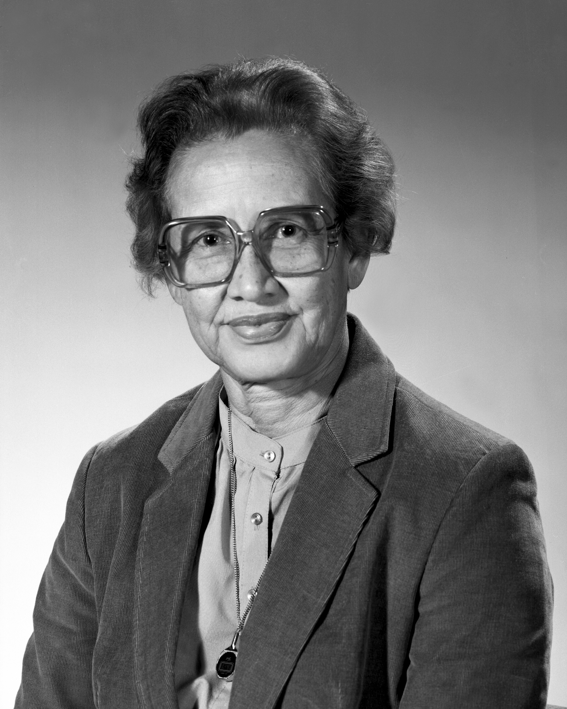

Accueil
Depuis les débuts de l'informatique, les femmes ont joué un rôle essentiel dans son développement. Pourtant, malgré leurs nombreuses contributions à l'évolution des technologies, elles restent aujourd'hui largement sous-représentées dans ce domaine.
Cette absence ne s'explique pas par un manque de compétences ou d'intérêt, mais par une accumulation de facteurs historiques, sociaux et culturels. Pendant plusieurs décennies, les femmes ont participé à la programmation, aux calculs scientifiques et à la conception des premiers systèmes informatiques. Certaines de leurs découvertes et réalisations ont pourtant été oubliées ou attribuées à leurs collègues masculins.
Au fil du temps, l'informatique s'est progressivement construite une image de domaine principalement masculin. Les stéréotypes de genre, les inégalités dans l'orientation scolaire, le manque de modèles féminins et les difficultés rencontrées dans le monde professionnel ont contribué à éloigner les femmes de ces métiers.
Aujourd'hui encore, ces inégalités persistent, aussi bien dans les formations que dans les entreprises du numérique. Pourtant, la diversité est une véritable richesse pour l'innovation et le développement technologique.
Elles ont marqué l'histoire
Les pionnières

ADA LOVELACE (1815-1852)
Le programme informatique
Elle a été élevée par sa mère, passionnée de mathématiques et de sciences. Elle rencontre de grands chercheurs de l'époque et notamment Charles Babbage dont la machine à calculs la fascine. Elle a 17 ans. Plus tard, devenue mère, elle retourne à ses études mathématiques avec l'aide du mathématicien Auguste de Morgan. En 1842, Charles Babbage lui confie la traduction depuis le français d'un article sur sa machine. Ada l'enrichit de notes explicatives. L'une d'entre elles comporte un algorithme très détaillé permettant de calculer à l'aide de la machine une suite de nombres rationnels (appelés « nombres de Bernoulli »). Le programme ainsi composé est considéré comme le premier programme informatique au monde.
HEDY LAMARR (1914-2000)
L'ancêtre du wifi
Les débuts cinématographiques d'Hedy ont lieu à Vienne en Autriche lorsqu'elle a 16 ans. On la connaît surtout comme l'une des stars de la MGM. Pourtant sans elle, la seconde guerre mondiale aurait pu prendre un autre tour et vos téléphones portables ne seraient peut-être pas ce qu'ils sont. Au début des années 1941, elle a inventé, avec le compositeur George Antheil, un système de communication permettant aux torpilles sous-marines de changer de fréquence sans être repérées. La technologie a ensuite été utilisée pour communiquer avec les navettes spatiales, dans les mobiles et le wifi.

KATHERINE JOHNSON (1918-2020)
Calculs des trajectoires spatiales
Katherine Johnson était une mathématicienne afro-américaine qui a travaillé pour la NASA. Grâce à ses compétences exceptionnelles en mathématiques, elle a réalisé des calculs complexes permettant de déterminer les trajectoires des engins spatiaux et de sécuriser les vols habités. Elle a notamment contribué au succès de la mission Mercury, qui a envoyé le premier Américain dans l'espace, ainsi qu'à la mission Apollo 11, qui a permis aux premiers hommes de marcher sur la Lune. À une époque où les femmes afro-américaines faisaient face à de nombreuses discriminations, son travail a joué un rôle majeur dans la conquête spatiale.
Contactez-nous
Rentrez vos identifiants afin de pouvoir vous recontacter !